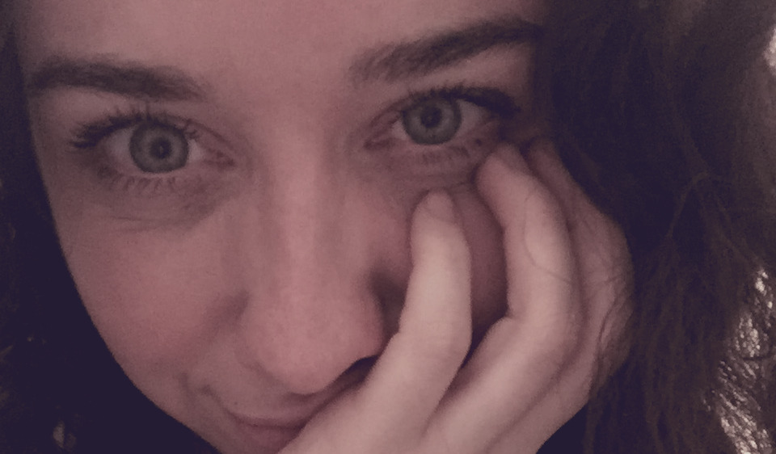
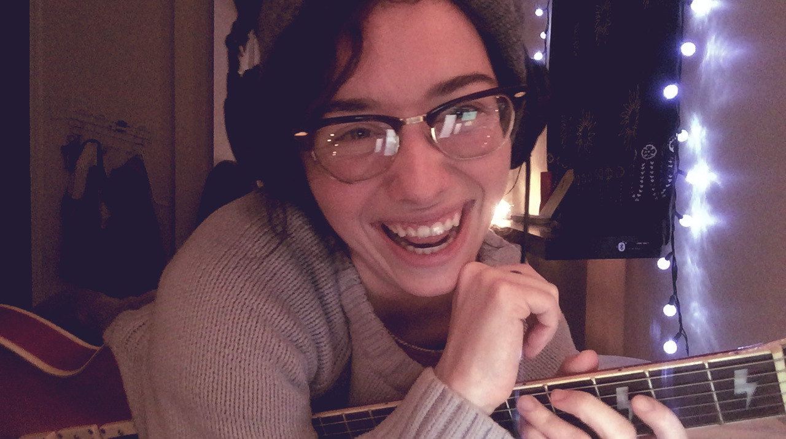
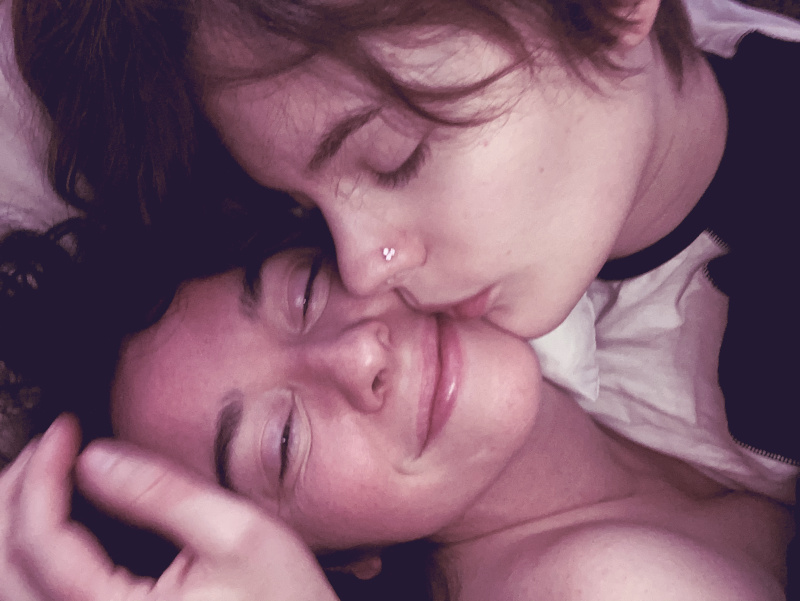
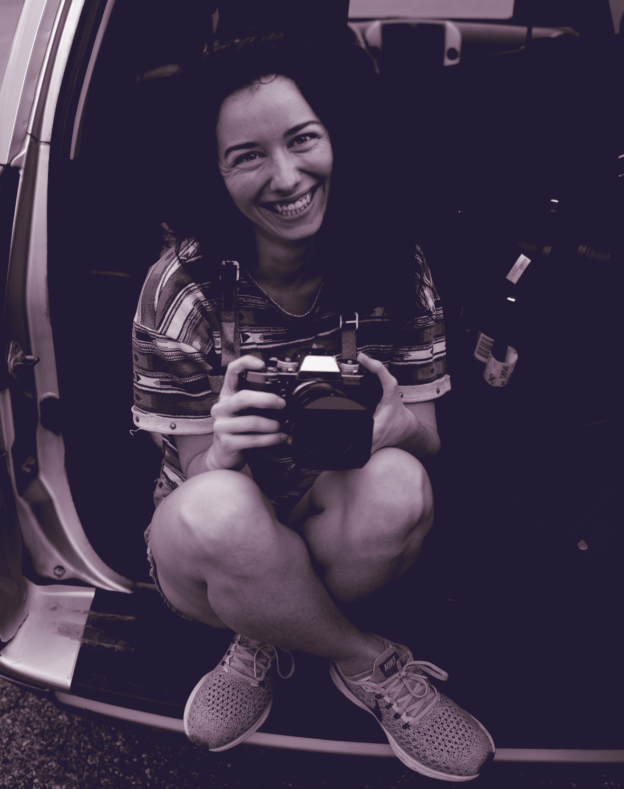
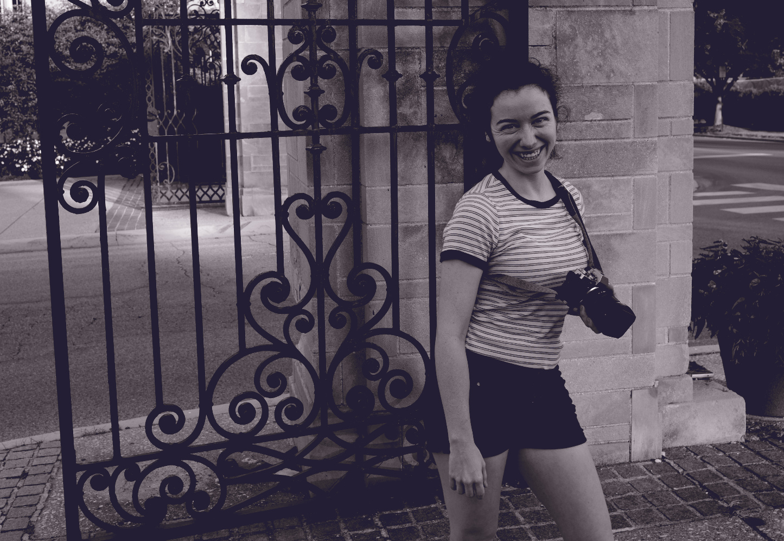
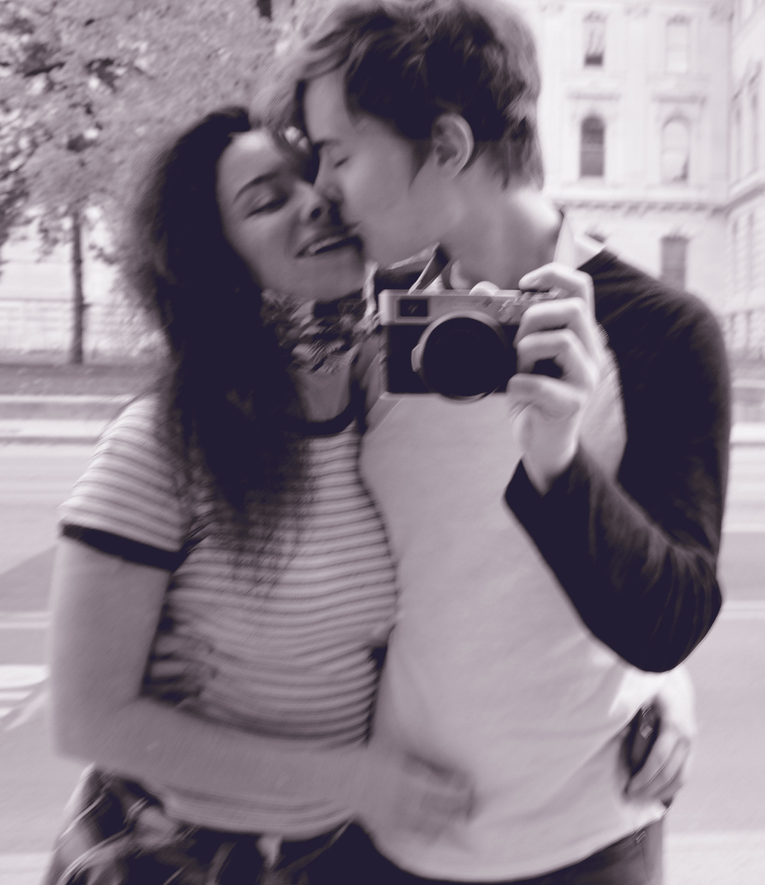

My Dear Elizabeth
I thought I'd write you a little letter for Valentine's day. It's funny, I've never really celebrated this holiday before. I never got candygrams in school. I never sent anyone flowers. I never had this insatiable drive to give myself completely to anyone before. You have brought this part of me to the foreground, you have given me so many reasons to smile and you have shown me what kind of love is possible, in ways I had never imagined.
The Way You Look At Me
I think I first fell in love with you when you looked at me like this. Your eyes are are kind, glimmering and intriguing. We joke about staring for twenty years, but I bet I could actually do it. I hope we have that much time together! Every time we FaceTime, and I see you look at me like this, I melt. You are the most beautiful person to me.
My Little Cannonball
I love how cozy you look in this picture. We spend so much time together, just comfy in our PJs, or in my case "the same clothes I've worn for a week straight". I love how we support each other and accept each other's bodies and quirks! I never feel like I have to pretend to be anything I'm not around you, and I think you feel the same. It's a wonderfully liberating sensation.
I know that no matter what, you will see the beauty in me. That makes me feel so special and loved. It's something I have never felt before: to be so unconditionally accepted. You make me feel flawless, despite how rough I am around the edges. I hope I make you feel the same.
A Goofy Gal
You are silly. There, I said it. I have to admit, this might be the thing I find the most attractive about you. You make me laugh so much. You have such a delightful sense of humour! As you once said, "we can riff for days!" I adore our bedtime stories, and the strange creations of our imaginations. Making little gifts for each other is such a fantastic way to show our affection. I loved seeing your reaction to my little script game a few days ago. I cherish those moments, where we feel so connected and playful.
I remember when you pretended to be "me". That made me laugh so hard! You are never afraid to razzle my dazzles a bit, and I love that! It certainly doesn't match the amount of times I pull your Kippum Whiskers though!! I do love bugging you like that, and tickling you. I think it is because of how much I love to hear you laugh. Your laughter is like a drug to me.
In Constant Contact
We never stop talking. Nothing seems to prevent us from finding the time to FaceTime for hours, and hours, and hours! It's astounding. I think some people would be shocked. It might not even be legal in some countries. It is always the time for FaceTime times with us! Whether it is to "hold hands" together, to vent about our days, or to watch a silly movie, every moment we spend together is comforting.
As much fun as it is watching shows with you, I have to say - my favourite moments are when you are riled about something! Seeing you speak your passions to me is so attractive!

You are truly the goofiest gal around! I love my Princess Cute E Kitten! You have a way of making something amazing from whatever you have around you, and I don't just mean with your tampon and cup-sleeve crown. You bring out something special in everyone around you. No matter what you have in life, you make the best of it.
I find this aspect of you to be so inspiring. You bring me so much joy! I joked about "Pelican Man" being the first moment I fell in love with you, but it was certainly a defining moment in our relationship. It's so important to me that we can share these silly creations. I adore how we support each other in our silliness and always manage to find a way to join in!
The Way We Fit Together
Perfect. The way we fit together is perfect. Holding you. Kissing you. Our bodies connect in such a wonderful way. I know it was a bit scary to meet for the first time, without knowing how we would connect. Little did we know how amazing it would be.
From the first kiss at the airport, to our make out session in front of Black Friday: The Store, every time we touched it felt so right and so natural. Holding you in my arms felt so important. It felt like the most important thing I could do in my life. I felt safe, in your arms, but I also felt like I could protect you from anything.
Our First Visit
Our first six months together was a dream come true for me. As tough as it was, to be in a global pandemic, isolated from friendds and family, it certainly a test of our connection! We spent hours and hours together, where some couples might have grown annoyed at each other, we grew even closer.
We had so many opportunities to cherish the silence, the stilless of being. From walking around the IU campus taking photos early in the morning, to watching the rain fall gently outside your bedroom window as we held eachother: time seemed to stand still. From the muggy heat of summer, where we'd walk hand-in-hand down the B-line, grab a healthy snack from BloomingFoods, to the cool evening adventures in the construction site, to the cold chills of October and an unexpected power outage. Every moment seemed like an eternity, yet at the same time it went by far too fast.
The First Photo I took of You
There it is - that smile. Those eyes. The way you look at me. I can't help but fall more and more in love you with each time I see your face.
You Showed Me Bloomington
I loved how you were always up for a photoshoot. You were so excited to show me around Bloomington. Even though it was not its usual bustling self, the town still charmed me, in no small part due to your enthusiasm for it! You showed me all the cute food spots, the beautiful campus, and the heart of the city.
I could see why you loved it so much. It reminded me of how much good there is, all around us, if you just look a little bit. I know when I first thought of Indiana, I was a bit worried! Oh no, a Red State! I know it's not perfect, but so many people I met were kind, creative and genuine.
Kissy Wissy
The best part about being with you is the knowledge that it is just beginning. I am so thrilled and excited for what the future has in store for us, Elizabeth. You bring out the best in me, and I'm looking forward to growing and learning with you.
I can't wait for the next steps we take together.
I love you, Elizabeth Ann Kitten.